2026 Advanced Higher Computing Science questions
Source: Scottish Qualifications Authority (SQA) / Qualifications Scotland. This is a StemInteract HTML companion, not an official HTML edition. Selectable text is supplied alongside original page images. Use the images or original PDF for equations, powers, fractions, vector notation, tables and diagrams; text extraction cannot fully preserve mathematical layout.
Jump to a question
PDF page 1
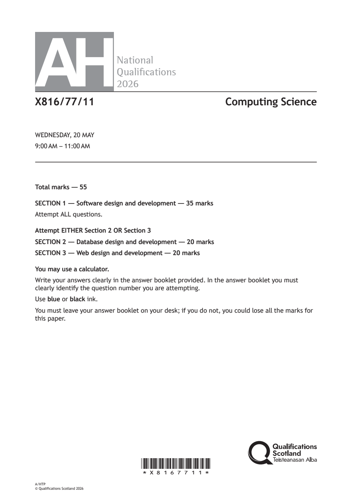
Selectable page text
AH
National
Qualications
2026
X816/77/11 Computing Science
WEDNESDAY, 20 MAY
9:00 AM – 11:00 AM
Total marks — 55
SECTION 1 — Software design and development — 35 marks
Attempt ALL questions.
Attempt EITHER Section 2 OR Section 3
SECTION 2 — Database design and development — 20 marks
SECTION 3 — Web design and development — 20 marks
You may use a calculator.
Write your answers clearly in the answer booklet provided. In the answer booklet you must
clearly identify the question number you are attempting.
Use blue or black ink.
You must leave your answer booklet on your desk; if you do not, you could lose all the marks for
this paper.
*X8167711*
A/HTP
© Qualifications Scotland 2026PDF page 2
Question 1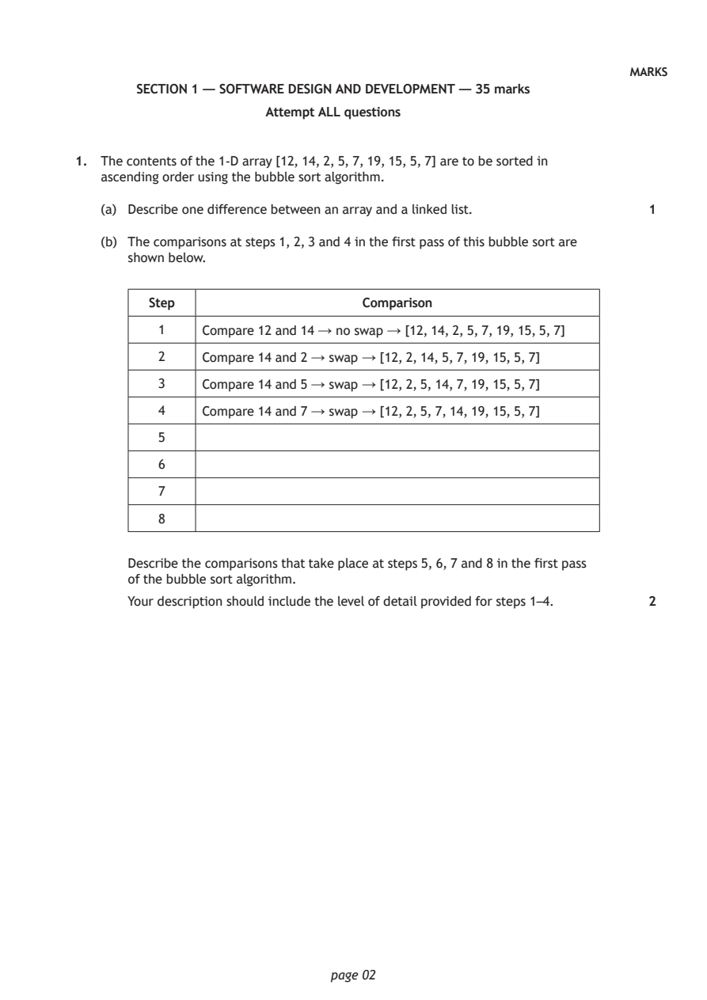
Selectable page text
MARKS
SECTION 1 — SOFTWARE DESIGN AND DEVELOPMENT — 35 marks
Attempt ALL questions
1. The contents of the 1‑D array [12, 14, 2, 5, 7, 19, 15, 5, 7] are to be sorted in
ascending order using the bubble sort algorithm.
(a) Describe one difference between an array and a linked list. 1
(b) The comparisons at steps 1, 2, 3 and 4 in the first pass of this bubble sort are
shown below.
Step Comparison
1 Compare 12 and 14 → no swap → [12, 14, 2, 5, 7, 19, 15, 5, 7]
2 Compare 14 and 2 → swap → [12, 2, 14, 5, 7, 19, 15, 5, 7]
3 Compare 14 and 5 → swap → [12, 2, 5, 14, 7, 19, 15, 5, 7]
4 Compare 14 and 7 → swap → [12, 2, 5, 7, 14, 19, 15, 5, 7]
5
6
7
8
Describe the comparisons that take place at steps 5, 6, 7 and 8 in the first pass
of the bubble sort algorithm.
Your description should include the level of detail provided for steps 1–4. 2
page 02PDF page 3
Question 2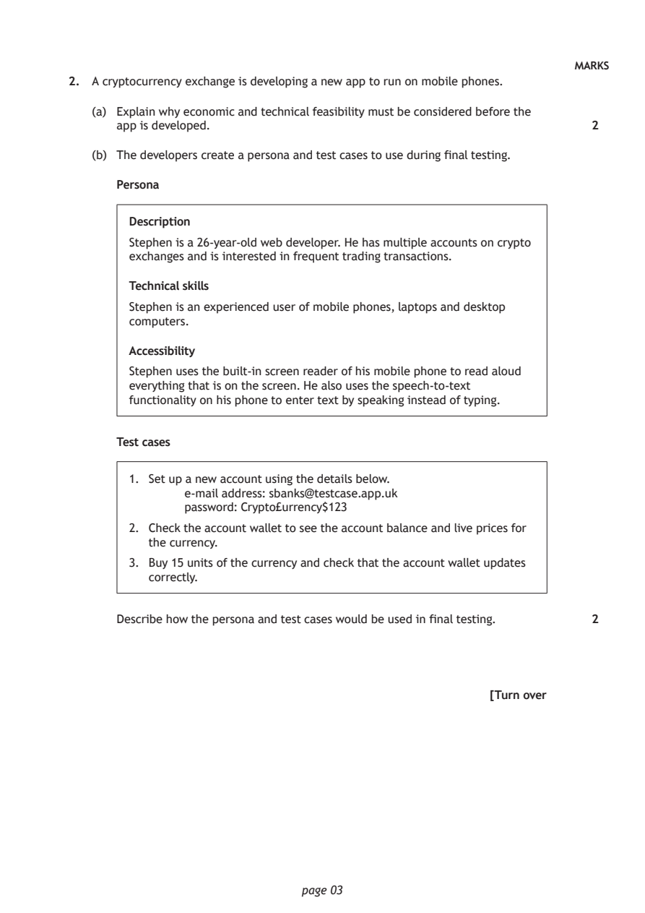
Selectable page text
MARKS
2. A cryptocurrency exchange is developing a new app to run on mobile phones.
(a) Explain why economic and technical feasibility must be considered before the
app is developed. 2
(b) The developers create a persona and test cases to use during final testing.
Persona
Description
Stephen is a 26‑year‑old web developer. He has multiple accounts on crypto
exchanges and is interested in frequent trading transactions.
Technical skills
Stephen is an experienced user of mobile phones, laptops and desktop
computers.
Accessibility
Stephen uses the built‑in screen reader of his mobile phone to read aloud
everything that is on the screen. He also uses the speech‑to‑text
functionality on his phone to enter text by speaking instead of typing.
Test cases
1. Set up a new account using the details below.
e‑mail address: sbanks@testcase.app.uk
password: Crypto£urrency$123
2. Check the account wallet to see the account balance and live prices for
the currency.
3. Buy 15 units of the currency and check that the account wallet updates
correctly.
Describe how the persona and test cases would be used in final testing. 2
[Turn over
page 03PDF page 4
Question 3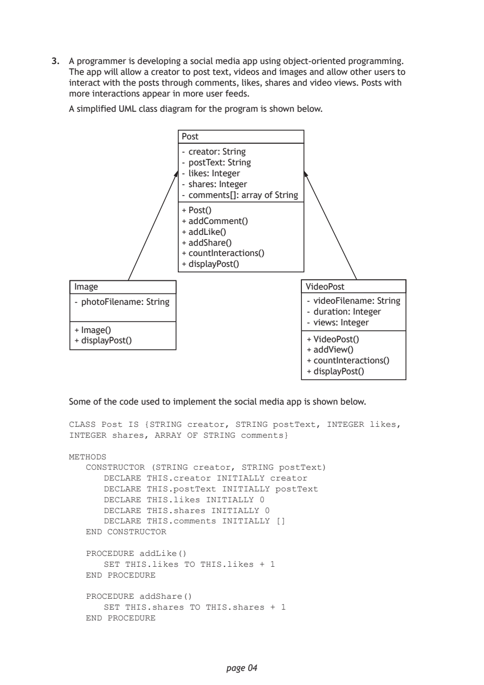
Selectable page text
3. A programmer is developing a social media app using object‑oriented programming.
The app will allow a creator to post text, videos and images and allow other users to
interact with the posts through comments, likes, shares and video views. Posts with
more interactions appear in more user feeds.
A simplified UML class diagram for the program is shown below.
Post
- creator: String
- postText: String
- likes: Integer
- shares: Integer
- comments[]: array of String
+ Post()
+ addComment()
+ addLike()
+ addShare()
+ countInteractions()
+ displayPost()
Image VideoPost
- photoFilename: String - videoFilename: String
- duration: Integer
- views: Integer
+ Image()
+ displayPost() + VideoPost()
+ addView()
+ countInteractions()
+ displayPost()
Some of the code used to implement the social media app is shown below.
CLASS Post IS {STRING creator, STRING postText, INTEGER likes,
INTEGER shares, ARRAY OF STRING comments}
METHODS
CONSTRUCTOR (STRING creator, STRING postText)
DECLARE THIS.creator INITIALLY creator
DECLARE THIS.postText INITIALLY postText
DECLARE THIS.likes INITIALLY 0
DECLARE THIS.shares INITIALLY 0
DECLARE THIS.comments INITIALLY []
END CONSTRUCTOR
PROCEDURE addLike()
SET THIS.likes TO THIS.likes + 1
END PROCEDURE
PROCEDURE addShare()
SET THIS.shares TO THIS.shares + 1
END PROCEDURE
page 04PDF page 5
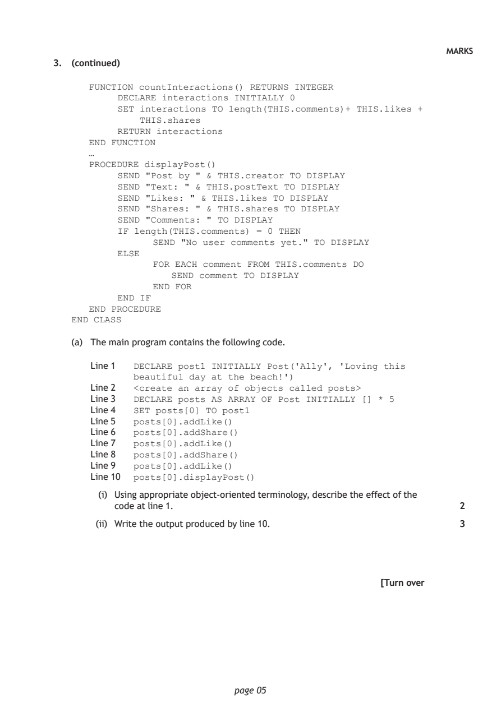
Selectable page text
MARKS
3. (continued)
FUNCTION countInteractions() RETURNS INTEGER
DECLARE interactions INITIALLY 0
SET interactions TO length(THIS.comments)+ THIS.likes +
THIS.shares
RETURN interactions
END FUNCTION
…
PROCEDURE displayPost()
SEND "Post by " & THIS.creator TO DISPLAY
SEND "Text: " & THIS.postText TO DISPLAY
SEND "Likes: " & THIS.likes TO DISPLAY
SEND "Shares: " & THIS.shares TO DISPLAY
SEND "Comments: " TO DISPLAY
IF length(THIS.comments) = 0 THEN
SEND "No user comments yet." TO DISPLAY
ELSE
FOR EACH comment FROM THIS.comments DO
SEND comment TO DISPLAY
END FOR
END IF
END PROCEDURE
END CLASS
(a) The main program contains the following code.
Line 1
DECLARE post1 INITIALLY Post('Ally', 'Loving this
beautiful day at the beach!')
Line 2
<create an array of objects called posts>
Line 3
DECLARE posts AS ARRAY OF Post INITIALLY [] * 5
Line 4
SET posts[0] TO post1
Line 5
posts[0].addLike()
Line 6
posts[0].addShare()
Line 7
posts[0].addLike()
Line 8
posts[0].addShare()
Line 9
posts[0].addLike()
Line 10
posts[0].displayPost()
(i) Using appropriate object‑oriented terminology, describe the effect of the
code at line 1. 2
(ii) Write the output produced by line 10. 3
[Turn over
page 05PDF page 6
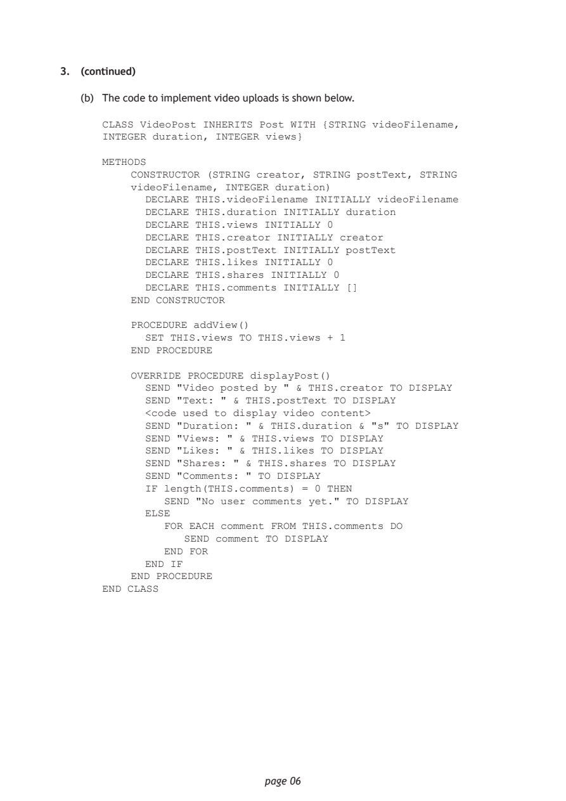
Selectable page text
3. (continued)
(b) The code to implement video uploads is shown below.
CLASS VideoPost INHERITS Post WITH {STRING videoFilename,
INTEGER duration, INTEGER views}
METHODS
C ONSTRUCTOR (STRING creator, STRING postText, STRING
videoFilename, INTEGER duration)
DECLARE THIS.videoFilename INITIALLY videoFilename
DECLARE THIS.duration INITIALLY duration
DECLARE THIS.views INITIALLY 0
DECLARE THIS.creator INITIALLY creator
DECLARE THIS.postText INITIALLY postText
DECLARE THIS.likes INITIALLY 0
DECLARE THIS.shares INITIALLY 0
DECLARE THIS.comments INITIALLY []
END CONSTRUCTOR
PROCEDURE addView()
SET THIS.views TO THIS.views + 1
END PROCEDURE
OVERRIDE PROCEDURE displayPost()
SEND "Video posted by " & THIS.creator TO DISPLAY
SEND "Text: " & THIS.postText TO DISPLAY
<code used to display video content>
SEND "Duration: " & THIS.duration & "s" TO DISPLAY
SEND "Views: " & THIS.views TO DISPLAY
SEND "Likes: " & THIS.likes TO DISPLAY
SEND "Shares: " & THIS.shares TO DISPLAY
SEND "Comments: " TO DISPLAY
IF length(THIS.comments) = 0 THEN
SEND "No user comments yet." TO DISPLAY
ELSE
FOR EACH comment FROM THIS.comments DO
SEND comment TO DISPLAY
END FOR
END IF
END PROCEDURE
END CLASS
page 06PDF page 7
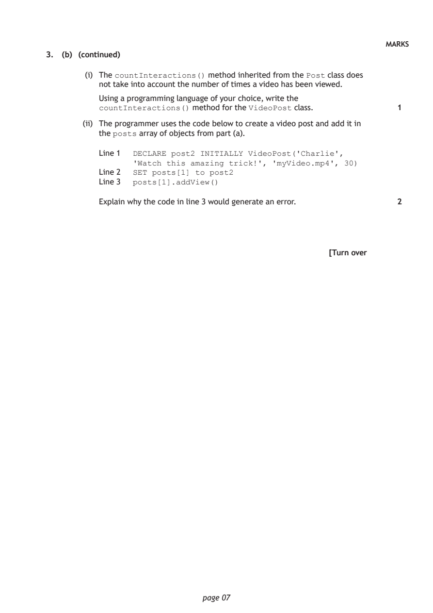
Selectable page text
MARKS
3. (b) (continued)
(i) The method inherited from the class does
countInteractions() Post
not take into account the number of times a video has been viewed.
Using a programming language of your choice, write the
method for the class. 1
countInteractions() VideoPost
(ii) The programmer uses the code below to create a video post and add it in
the array of objects from part (a).
posts
Line 1
DECLARE post2 INITIALLY VideoPost('Charlie',
'Watch this amazing trick!', 'myVideo.mp4', 30)
Line 2
SET posts[1] to post2
Line 3
posts[1].addView()
Explain why the code in line 3 would generate an error. 2
[Turn over
page 07PDF page 8
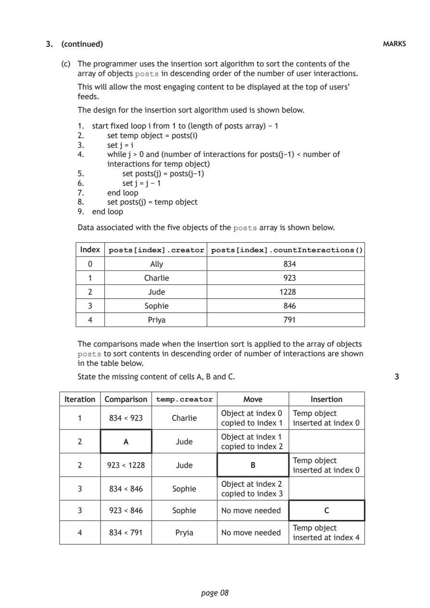
Selectable page text
3. (continued) MARKS
(c) The programmer uses the insertion sort algorithm to sort the contents of the
array of objects in descending order of the number of user interactions.
posts
This will allow the most engaging content to be displayed at the top of users’
feeds.
The design for the insertion sort algorithm used is shown below.
1. start fixed loop i from 1 to (length of posts array) − 1
2. set temp object = posts(i)
3. set j = i
4. while j > 0 and (number of interactions for posts(j−1) < number of
interactions for temp object)
5. set posts(j) = posts(j−1)
6. set j = j − 1
7. end loop
8. set posts(j) = temp object
9. end loop
Data associated with the five objects of the array is shown below.
posts
Index
posts[index].creator posts[index].countInteractions()
0 Ally 834
1 Charlie 923
2 Jude 1228
3 Sophie 846
4 Priya 791
The comparisons made when the insertion sort is applied to the array of objects
to sort contents in descending order of number of interactions are shown
posts
in the table below.
State the missing content of cells A, B and C. 3
Iteration Comparison Move Insertion
temp.creator
Object at index 0 Temp object
1 834 < 923 Charlie
copied to index 1 inserted at index 0
Object at index 1
2 A Jude
copied to index 2
Temp object
2 923 < 1228 Jude B
inserted at index 0
Object at index 2
3 834 < 846 Sophie
copied to index 3
3 923 < 846 Sophie No move needed C
Temp object
4 834 < 791 Pryia No move needed
inserted at index 4
page 08PDF page 9
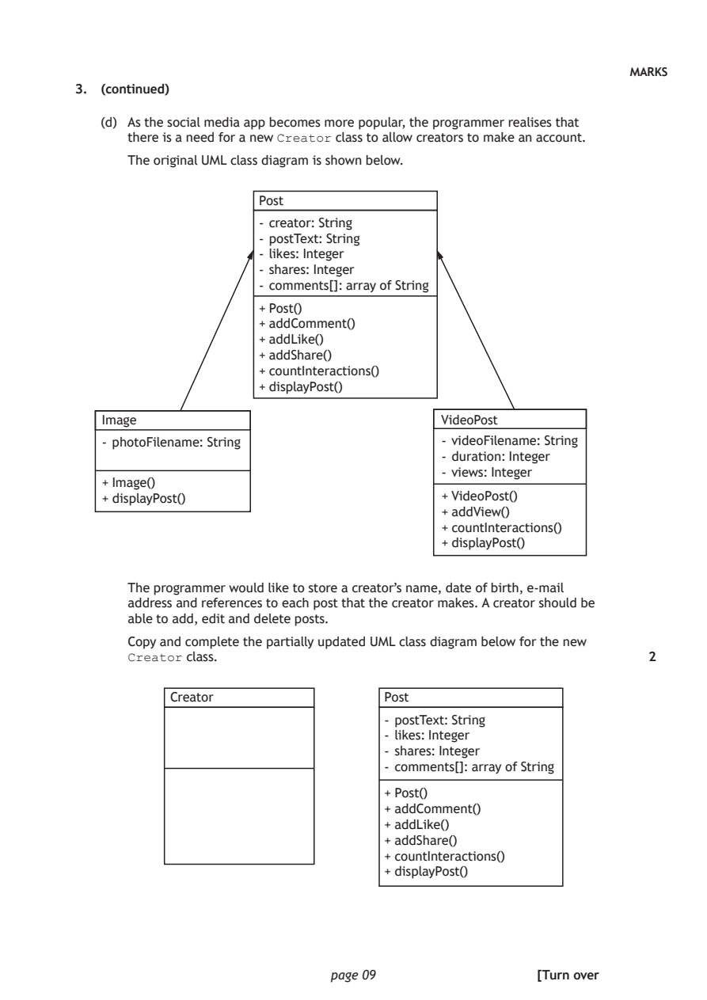
Selectable page text
MARKS
3. (continued)
(d) As the social media app becomes more popular, the programmer realises that
there is a need for a new class to allow creators to make an account.
Creator
The original UML class diagram is shown below.
Post
- creator: String
- postText: String
- likes: Integer
- shares: Integer
- comments[]: array of String
+ Post()
+ addComment()
+ addLike()
+ addShare()
+ countInteractions()
+ displayPost()
Image VideoPost
- photoFilename: String - videoFilename: String
- duration: Integer
- views: Integer
+ Image()
+ displayPost() + VideoPost()
+ addView()
+ countInteractions()
+ displayPost()
The programmer would like to store a creator’s name, date of birth, e‑mail
address and references to each post that the creator makes. A creator should be
able to add, edit and delete posts.
Copy and complete the partially updated UML class diagram below for the new
class. 2
Creator
Creator Post
- postText: String
- likes: Integer
- shares: Integer
- comments[]: array of String
+ Post()
+ addComment()
+ addLike()
+ addShare()
+ countInteractions()
+ displayPost()
page 09 [Turn overPDF page 10
Question 4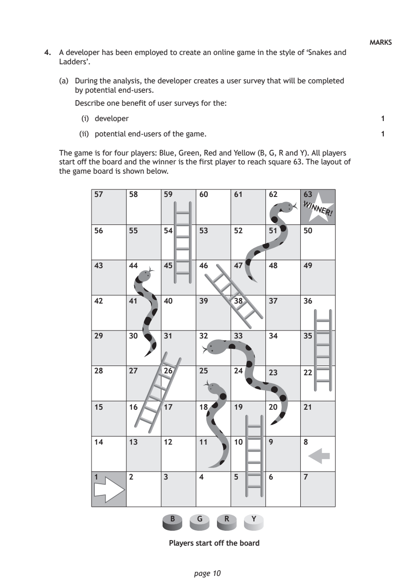
Selectable page text
MARKS
4. A developer has been employed to create an online game in the style of ‘Snakes and
Ladders’.
(a) During the analysis, the developer creates a user survey that will be completed
by potential end‑users.
Describe one benefit of user surveys for the:
(i) developer 1
(ii) potential end‑users of the game. 1
The game is for four players: Blue, Green, Red and Yellow (B, G, R and Y). All players
start off the board and the winner is the first player to reach square 63. The layout of
the game board is shown below.
57 58 59 60 61 62 63
W
INNER!
56 55 54 53 52 51 50
43 44 45 46 47 48 49
42 41 40 39 38 37 36
29 30 31 32 33 34 35
28 27 26 25 24 23 22
15 16 17 18 19 20 21
14 13 12 11 10 9 8
1 2 3 4 5 6 7
B G R Y
Players start off the board
page 10PDF page 11
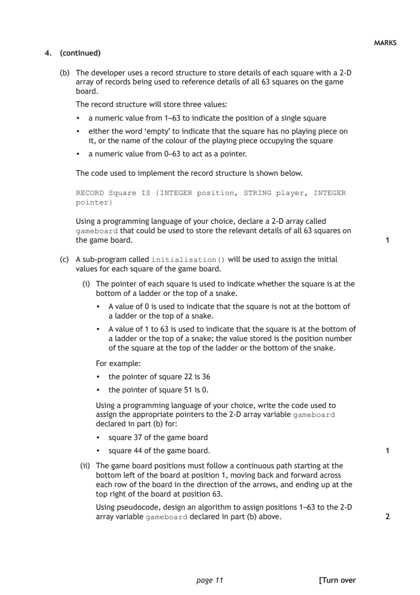
Selectable page text
MARKS
4. (continued)
(b) The developer uses a record structure to store details of each square with a 2‑D
array of records being used to reference details of all 63 squares on the game
board.
The record structure will store three values:
• a numeric value from 1–63 to indicate the position of a single square
• either the word ‘empty’ to indicate that the square has no playing piece on
it, or the name of the colour of the playing piece occupying the square
• a numeric value from 0–63 to act as a pointer.
The code used to implement the record structure is shown below.
RECORD Square IS {INTEGER position, STRING player, INTEGER
pointer}
Using a programming language of your choice, declare a 2‑D array called
that could be used to store the relevant details of all 63 squares on
gameboard
the game board. 1
(c) A sub‑program called will be used to assign the initial
initialisation()
values for each square of the game board.
(i) The pointer of each square is used to indicate whether the square is at the
bottom of a ladder or the top of a snake.
• A value of 0 is used to indicate that the square is not at the bottom of
a ladder or the top of a snake.
• A value of 1 to 63 is used to indicate that the square is at the bottom of
a ladder or the top of a snake; the value stored is the position number
of the square at the top of the ladder or the bottom of the snake.
For example:
• the pointer of square 22 is 36
• the pointer of square 51 is 0.
Using a programming language of your choice, write the code used to
assign the appropriate pointers to the 2‑D array variable
gameboard
declared in part (b) for:
• square 37 of the game board
• square 44 of the game board. 1
(ii) The game board positions must follow a continuous path starting at the
bottom left of the board at position 1, moving back and forward across
each row of the board in the direction of the arrows, and ending up at the
top right of the board at position 63.
Using pseudocode, design an algorithm to assign positions 1–63 to the 2‑D
array variable declared in part (b) above. 2
gameboard
page 11 [Turn overPDF page 12
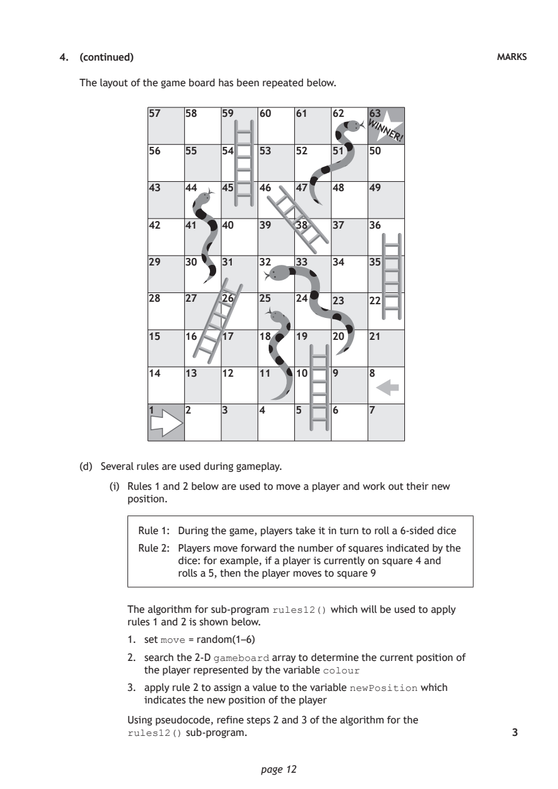
Selectable page text
4. (continued) MARKS
The layout of the game board has been repeated below.
57 58 59 60 61 62 63
W
IN
N
ER!
56 55 54 53 52 51 50
43 44 45 46 47 48 49
42 41 40 39 38 37 36
29 30 31 32 33 34 35
28 27 26 25 24 23 22
15 16 17 18 19 20 21
14 13 12 11 10 9 8
1 2 3 4 5 6 7
(d) Several rules are used during gameplay.
(i) Rules 1 and 2 below are used to move a player and work out their new
position.
Rule 1: During the game, players take it in turn to roll a 6‑sided dice
Rule 2: P layers move forward the number of squares indicated by the
dice: for example, if a player is currently on square 4 and
rolls a 5, then the player moves to square 9
The algorithm for sub‑program which will be used to apply
rules12()
rules 1 and 2 is shown below.
1. set = random(1–6)
move
2. search the 2‑D array to determine the current position of
gameboard
the player represented by the variable
colour
3. apply rule 2 to assign a value to the variable which
newPosition
indicates the new position of the player
Using pseudocode, refine steps 2 and 3 of the algorithm for the
sub‑program. 3
rules12()
page 12PDF page 13
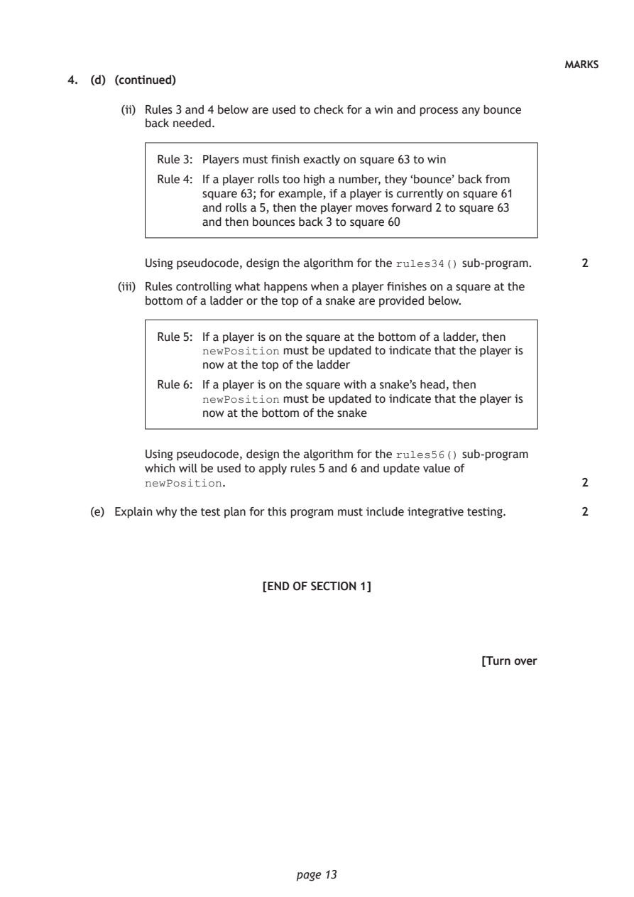
Selectable page text
MARKS
4. (d) (continued)
(ii) Rules 3 and 4 below are used to check for a win and process any bounce
back needed.
Rule 3: Players must finish exactly on square 63 to win
Rule 4: I f a player rolls too high a number, they ‘bounce’ back from
square 63; for example, if a player is currently on square 61
and rolls a 5, then the player moves forward 2 to square 63
and then bounces back 3 to square 60
Using pseudocode, design the algorithm for the sub‑program. 2
rules34()
(iii) Rules controlling what happens when a player finishes on a square at the
bottom of a ladder or the top of a snake are provided below.
Rule 5: I f a player is on the square at the bottom of a ladder, then
must be updated to indicate that the player is
newPosition
now at the top of the ladder
Rule 6: I f a player is on the square with a snake’s head, then
must be updated to indicate that the player is
newPosition
now at the bottom of the snake
Using pseudocode, design the algorithm for the sub‑program
rules56()
which will be used to apply rules 5 and 6 and update value of
. 2
newPosition
(e) Explain why the test plan for this program must include integrative testing. 2
[END OF SECTION 1]
[Turn over
page 13PDF page 14
Question 5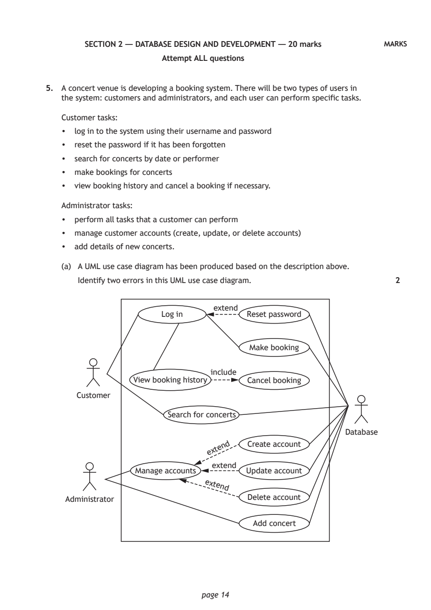
Selectable page text
SECTION 2 — DATABASE DESIGN AND DEVELOPMENT — 20 marks MARKS
Attempt ALL questions
5. A concert venue is developing a booking system. There will be two types of users in
the system: customers and administrators, and each user can perform specific tasks.
Customer tasks:
• log in to the system using their username and password
• reset the password if it has been forgotten
• search for concerts by date or performer
• make bookings for concerts
• view booking history and cancel a booking if necessary.
Administrator tasks:
• perform all tasks that a customer can perform
• manage customer accounts (create, update, or delete accounts)
• add details of new concerts.
(a) A UML use case diagram has been produced based on the description above.
Identify two errors in this UML use case diagram. 2
extend
Log in Reset password
Make booking
include
View booking history Cancel booking
Customer
Search for concerts
Database
extend Create account
extend
Manage accounts Update account
extend
Administrator Delete account
Add concert
page 14PDF page 15
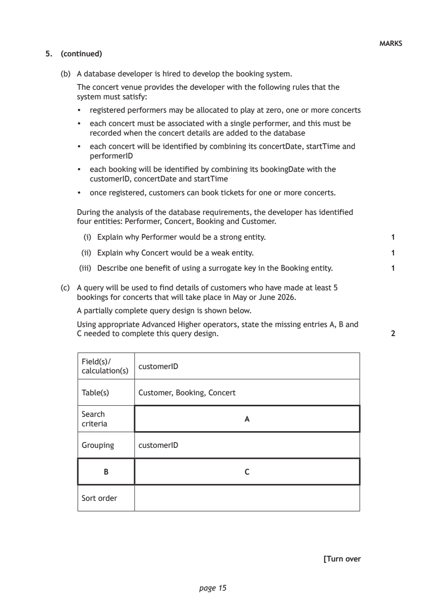
Selectable page text
MARKS
5. (continued)
(b) A database developer is hired to develop the booking system.
The concert venue provides the developer with the following rules that the
system must satisfy:
• registered performers may be allocated to play at zero, one or more concerts
• each concert must be associated with a single performer, and this must be
recorded when the concert details are added to the database
• each concert will be identified by combining its concertDate, startTime and
performerID
• each booking will be identified by combining its bookingDate with the
customerID, concertDate and startTime
• once registered, customers can book tickets for one or more concerts.
During the analysis of the database requirements, the developer has identified
four entities: Performer, Concert, Booking and Customer.
(i) Explain why Performer would be a strong entity. 1
(ii) Explain why Concert would be a weak entity. 1
(iii) Describe one benefit of using a surrogate key in the Booking entity. 1
(c) A query will be used to find details of customers who have made at least 5
bookings for concerts that will take place in May or June 2026.
A partially complete query design is shown below.
Using appropriate Advanced Higher operators, state the missing entries A, B and
C needed to complete this query design. 2
Field(s)/
customerID
calculation(s)
Table(s) Customer, Booking, Concert
Search
A
criteria
Grouping customerID
B C
Sort order
[Turn over
page 15PDF page 16
Question 6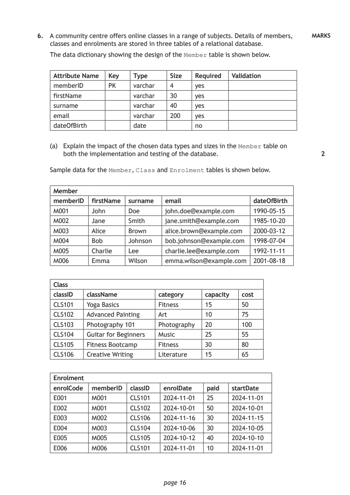
Selectable page text
6. A community centre offers online classes in a range of subjects. Details of members, MARKS
classes and enrolments are stored in three tables of a relational database.
The data dictionary showing the design of the table is shown below.
Member
Attribute Name Key Type Size Required Validation
memberID PK varchar 4 yes
firstName varchar 30 yes
surname varchar 40 yes
email varchar 200 yes
dateOfBirth date no
(a) Explain the impact of the chosen data types and sizes in the table on
Member
both the implementation and testing of the database. 2
Sample data for the , and tables is shown below.
Member Class Enrolment
Member
memberID firstName surname email dateOfBirth
M001 John Doe john.doe@example.com 1990‑05‑15
M002 Jane Smith jane.smith@example.com 1985‑10‑20
M003 Alice Brown alice.brown@example.com 2000‑03‑12
M004 Bob Johnson bob.johnson@example.com 1998‑07‑04
M005 Charlie Lee charlie.lee@example.com 1992‑11‑11
M006 Emma Wilson emma.wilson@example.com 2001‑08‑18
Class
classID className category capacity cost
CLS101 Yoga Basics Fitness 15 50
CLS102 Advanced Painting Art 10 75
CLS103 Photography 101 Photography 20 100
CLS104 Guitar for Beginners Music 25 55
CLS105 Fitness Bootcamp Fitness 30 80
CLS106 Creative Writing Literature 15 65
Enrolment
enrolCode memberID classID enrolDate paid startDate
E001 M001 CLS101 2024‑11‑01 25 2024‑11‑01
E002 M001 CLS102 2024‑10‑01 50 2024‑10‑01
E003 M002 CLS106 2024‑11‑16 30 2024‑11‑15
E004 M003 CLS104 2024‑10‑06 30 2024‑10‑05
E005 M005 CLS105 2024‑10‑12 40 2024‑10‑10
E006 M006 CLS101 2024‑11‑01 10 2024‑11‑01
page 16PDF page 17
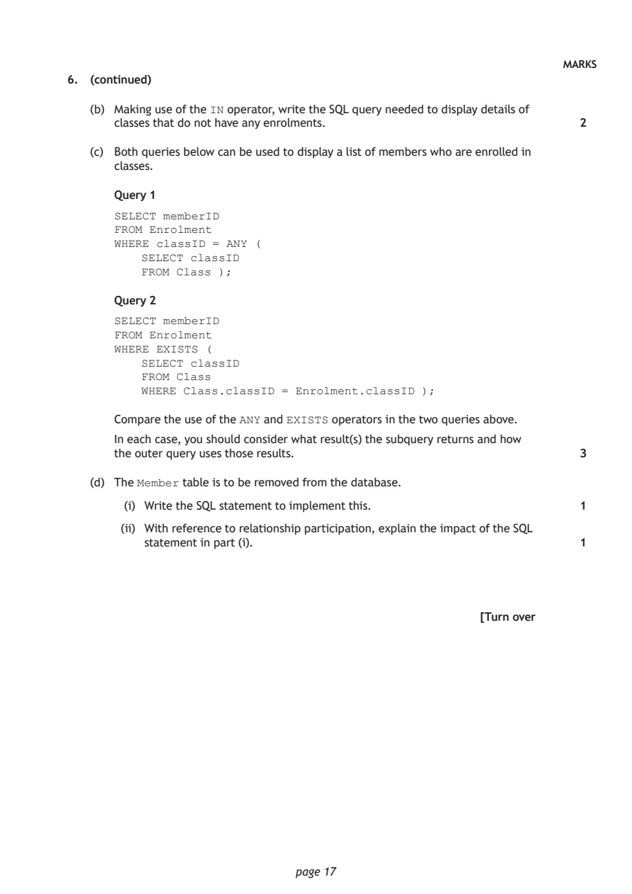
Selectable page text
MARKS
6. (continued)
(b) Making use of the operator, write the SQL query needed to display details of
IN
classes that do not have any enrolments. 2
(c) Both queries below can be used to display a list of members who are enrolled in
classes.
Query 1
SELECT memberID
FROM Enrolment
WHERE classID = ANY (
SELECT classID
FROM Class );
Query 2
SELECT memberID
FROM Enrolment
WHERE EXISTS (
SELECT classID
FROM Class
WHERE Class.classID = Enrolment.classID );
Compare the use of the and operators in the two queries above.
ANY EXISTS
In each case, you should consider what result(s) the subquery returns and how
the outer query uses those results. 3
(d) The table is to be removed from the database.
Member
(i) Write the SQL statement to implement this. 1
(ii) With reference to relationship participation, explain the impact of the SQL
statement in part (i). 1
[Turn over
page 17PDF page 18
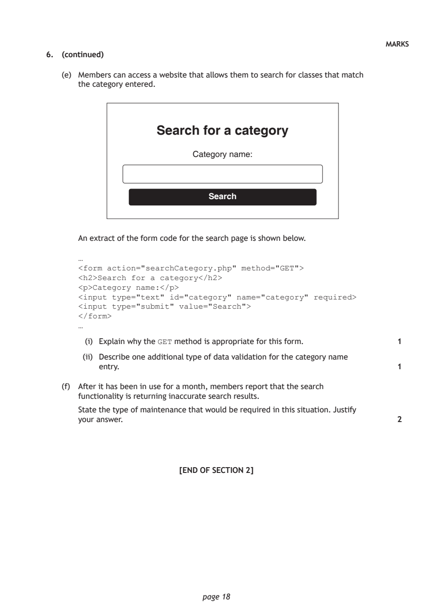
Selectable page text
MARKS
6. (continued)
(e) Members can access a website that allows them to search for classes that match
the category entered.
Search for a category
Category name:
Search
An extract of the form code for the search page is shown below.
…
<form action="searchCategory.php" method="GET">
<h2>Search for a category</h2>
<p>Category name:</p>
<input type="text" id="category" name="category" required>
<input type="submit" value="Search">
</form>
…
(i) Explain why the method is appropriate for this form. 1
GET
(ii) Describe one additional type of data validation for the category name
entry. 1
(f) After it has been in use for a month, members report that the search
functionality is returning inaccurate search results.
State the type of maintenance that would be required in this situation. Justify
your answer. 2
[END OF SECTION 2]
page 18PDF page 19
Question 7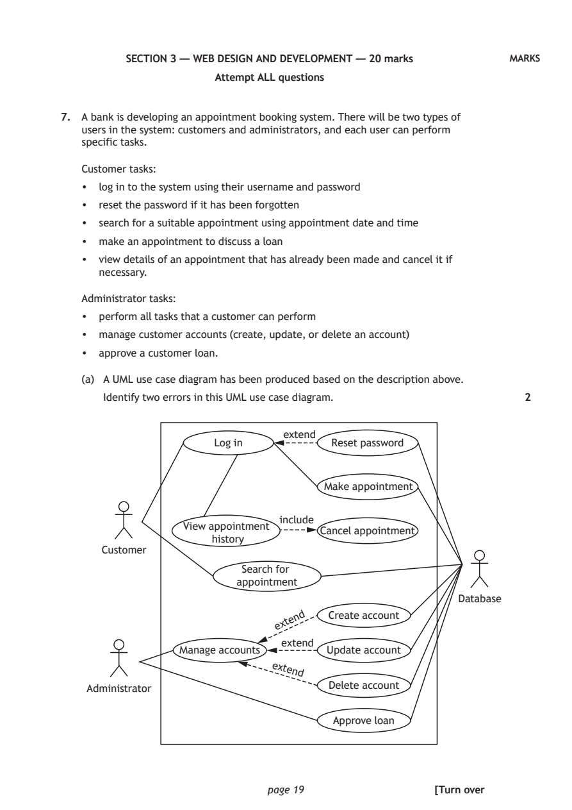
Selectable page text
SECTION 3 — WEB DESIGN AND DEVELOPMENT — 20 marks MARKS
Attempt ALL questions
7. A bank is developing an appointment booking system. There will be two types of
users in the system: customers and administrators, and each user can perform
specific tasks.
Customer tasks:
• log in to the system using their username and password
• reset the password if it has been forgotten
• search for a suitable appointment using appointment date and time
• make an appointment to discuss a loan
• view details of an appointment that has already been made and cancel it if
necessary.
Administrator tasks:
• perform all tasks that a customer can perform
• manage customer accounts (create, update, or delete an account)
• approve a customer loan.
(a) A UML use case diagram has been produced based on the description above.
Identify two errors in this UML use case diagram. 2
extend
Log in Reset password
Make appointment
include
View appointment
Cancel appointment
history
Customer
Search for
appointment
Database
extend Create account
extend
Manage accounts Update account
extend
Administrator Delete account
Approve loan
page 19 [Turn overPDF page 20
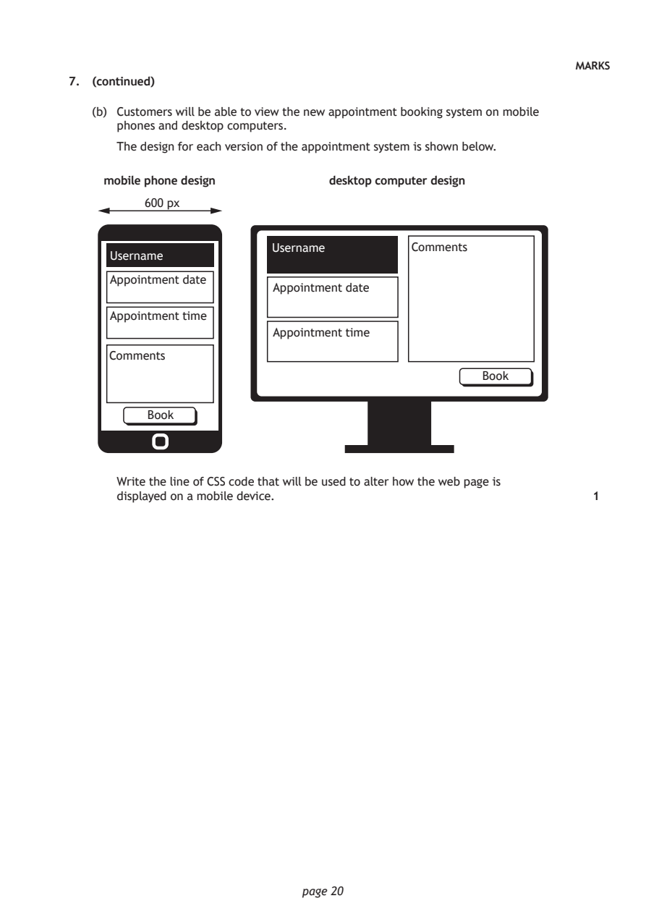
Selectable page text
MARKS
7. (continued)
(b) Customers will be able to view the new appointment booking system on mobile
phones and desktop computers.
The design for each version of the appointment system is shown below.
mobile phone design desktop computer design
600 px
Username Comments
Username
Appointment date
Appointment date
Appointment time
Appointment time
Comments
Book
Book
Write the line of CSS code that will be used to alter how the web page is
displayed on a mobile device. 1
page 20PDF page 21
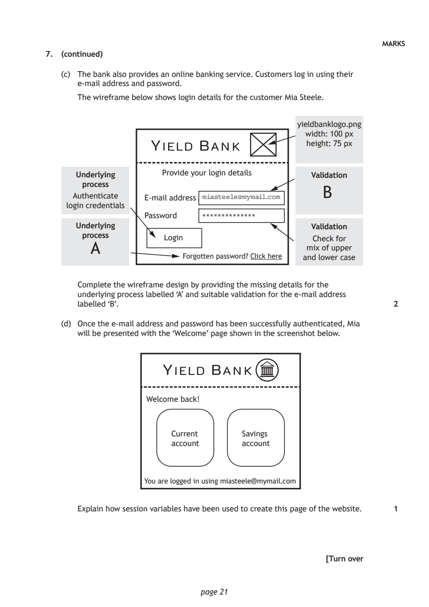
Selectable page text
MARKS
7. (continued)
(c) The bank also provides an online banking service. Customers log in using their
e‑mail address and password.
The wireframe below shows login details for the customer Mia Steele.
yieldbanklogo.png
width: 100 px
height: 75 px
Underlying Provide your login details Validation
process
B
Authenticate E-mail address miasteele@mymail.com
login credentials
Password **************
Underlying Validation
process
Login Check for
A
mix of upper
Forgotten password? Click here and lower case
Complete the wireframe design by providing the missing details for the
underlying process labelled ‘A’ and suitable validation for the e‑mail address
labelled ‘B’. 2
(d) Once the e‑mail address and password has been successfully authenticated, Mia
will be presented with the ‘Welcome’ page shown in the screenshot below.
Welcome back!
Current Savings
account account
You are logged in using miasteele@mymail.com
Explain how session variables have been used to create this page of the website. 1
[Turn over
page 21PDF page 22
Question 8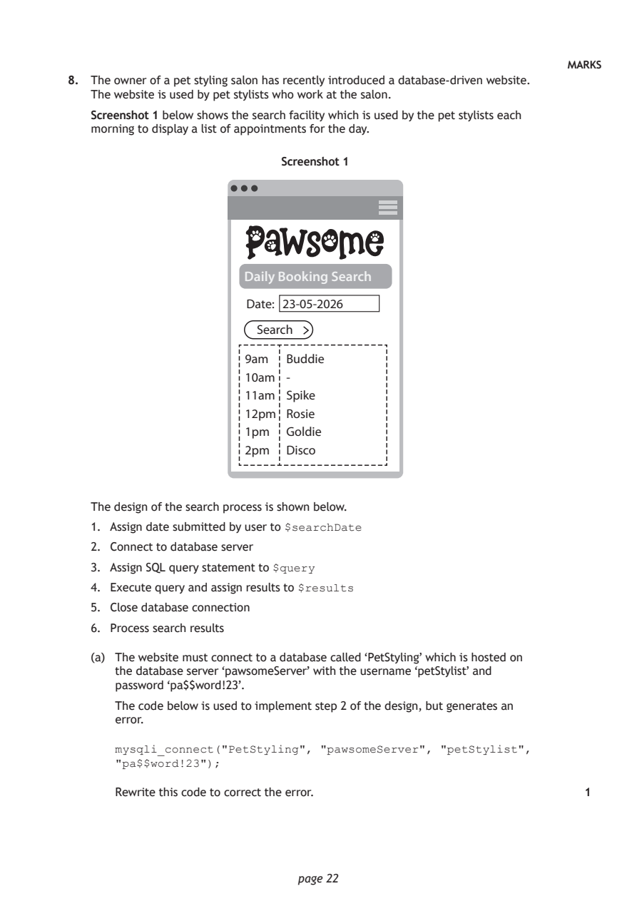
Selectable page text
MARKS
8. The owner of a pet styling salon has recently introduced a database‑driven website.
The website is used by pet stylists who work at the salon.
Screenshot 1 below shows the search facility which is used by the pet stylists each
morning to display a list of appointments for the day.
Screenshot 1
Daily Booking Search
Date: 23-05-2026
Search
9am Buddie
10am -
11am Spike
12pm Rosie
1pm Goldie
2pm Disco
The design of the search process is shown below.
1. Assign date submitted by user to
$searchDate
2. Connect to database server
3. Assign SQL query statement to
$query
4. Execute query and assign results to
$results
5. Close database connection
6. Process search results
(a) The website must connect to a database called ‘PetStyling’ which is hosted on
the database server ‘pawsomeServer’ with the username ‘petStylist’ and
password ‘pa$$word!23’.
The code below is used to implement step 2 of the design, but generates an
error.
mysqli_connect("PetStyling", "pawsomeServer", "petStylist",
"pa$$word!23");
Rewrite this code to correct the error. 1
page 22PDF page 23
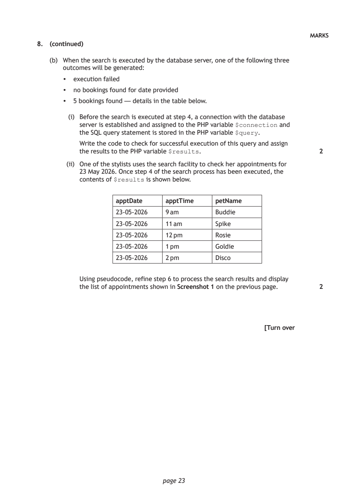
Selectable page text
MARKS
8. (continued)
(b) When the search is executed by the database server, one of the following three
outcomes will be generated:
• execution failed
• no bookings found for date provided
• 5 bookings found — details in the table below.
(i) Before the search is executed at step 4, a connection with the database
server is established and assigned to the PHP variable and
$connection
the SQL query statement is stored in the PHP variable .
$query
Write the code to check for successful execution of this query and assign
the results to the PHP variable . 2
$results
(ii) One of the stylists uses the search facility to check her appointments for
23 May 2026. Once step 4 of the search process has been executed, the
contents of is shown below.
$results
apptDate apptTime petName
23‑05‑2026 9 am Buddie
23‑05‑2026 11 am Spike
23‑05‑2026 12 pm Rosie
23‑05‑2026 1 pm Goldie
23‑05‑2026 2 pm Disco
Using pseudocode, refine step 6 to process the search results and display
the list of appointments shown in Screenshot 1 on the previous page. 2
[Turn over
page 23PDF page 24
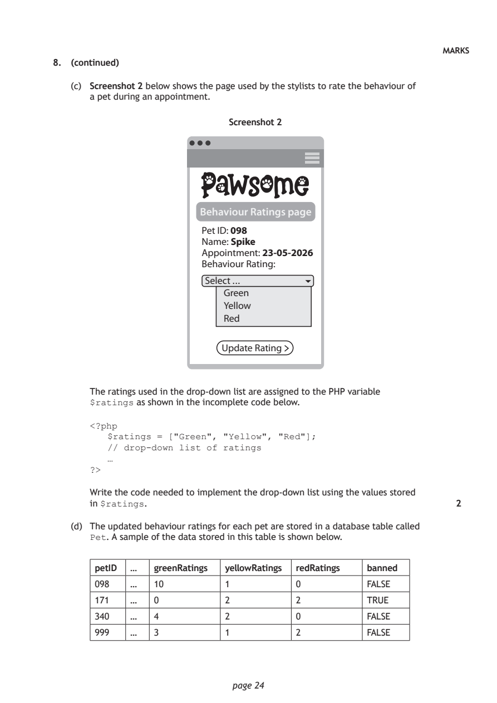
Selectable page text
MARKS
8. (continued)
(c) Screenshot 2 below shows the page used by the stylists to rate the behaviour of
a pet during an appointment.
Screenshot 2
Behaviour Ratings page
Pet ID: 098
Name: Spike
Appointment: 23-05-2026
Behaviour Rating:
Select ...
Green
Yellow
Red
Update Rating
The ratings used in the drop‑down list are assigned to the PHP variable
as shown in the incomplete code below.
$ratings
<?php
$ratings = ["Green", "Yellow", "Red"];
// drop‑down list of ratings
…
?>
Write the code needed to implement the drop‑down list using the values stored
in . 2
$ratings
(d) The updated behaviour ratings for each pet are stored in a database table called
. A sample of the data stored in this table is shown below.
Pet
petID … greenRatings yellowRatings redRatings banned
098 … 10 1 0 FALSE
171 … 0 2 2 TRUE
340 … 4 2 0 FALSE
999 … 3 1 2 FALSE
page 24PDF page 25
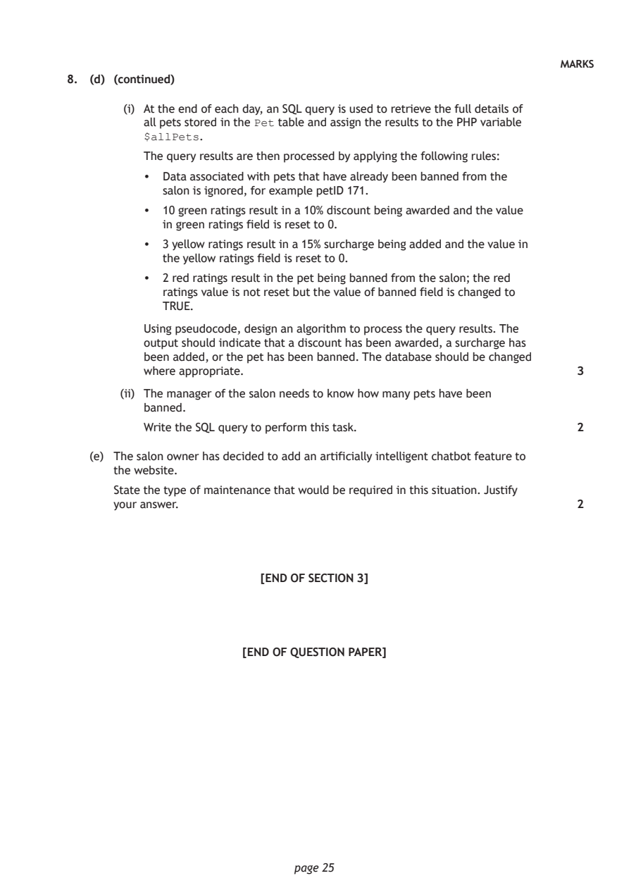
Selectable page text
MARKS
8. (d) (continued)
(i) At the end of each day, an SQL query is used to retrieve the full details of
all pets stored in the table and assign the results to the PHP variable
Pet
.
$allPets
The query results are then processed by applying the following rules:
• Data associated with pets that have already been banned from the
salon is ignored, for example petID 171.
• 10 green ratings result in a 10% discount being awarded and the value
in green ratings field is reset to 0.
• 3 yellow ratings result in a 15% surcharge being added and the value in
the yellow ratings field is reset to 0.
• 2 red ratings result in the pet being banned from the salon; the red
ratings value is not reset but the value of banned field is changed to
TRUE.
Using pseudocode, design an algorithm to process the query results. The
output should indicate that a discount has been awarded, a surcharge has
been added, or the pet has been banned. The database should be changed
where appropriate. 3
(ii) The manager of the salon needs to know how many pets have been
banned.
Write the SQL query to perform this task. 2
(e) The salon owner has decided to add an artificially intelligent chatbot feature to
the website.
State the type of maintenance that would be required in this situation. Justify
your answer. 2
[END OF SECTION 3]
[END OF QUESTION PAPER]
page 25PDF page 26
Selectable page text
[BLANK PAGE]
DO NOT WRITE ON THIS PAGE
page 26PDF page 27
Selectable page text
[BLANK PAGE]
DO NOT WRITE ON THIS PAGE
page 27PDF page 28
Selectable page text
[BLANK PAGE]
DO NOT WRITE ON THIS PAGE
page 28